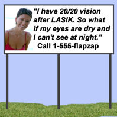
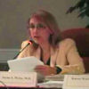
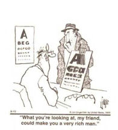

Дуглас Д. Кох, доктор медицинских наук:- Мы занимаемся медициной в духе Гиппократа или продаем подержанные автомобили?Реклама LASIK стала настоящим позором для офтальмологии. Агрессивная и вводящая в заблуждение реклама вовлекает пациентов в рискованные и ненужные операции. Реклама LASIK представляет операцию практически идеальной и безрисковой. Когда пациенты обращаются к поставщикам услуг LASIK за информацией или для записи на консультацию, они подвергаются давлению со стороны продавцов. Некоторые хирурги LASIK нарушают этические правила AMA, предлагая финансовые стимулы за направление. А еще есть рекламные уловки LASIK, которые упрощают процедуру: " Поцелуй свинью и выиграй бесплатную ЛАЗЕРНУЮ терапию!"
Хирург LASIK, Брайан Боксер Вахлер, доктор медицинских наук, читает рэп для LASIK
Комментарий редактора: По нашему мнению, это рэп-видео, спродюсированное доктором Брайаном Боксером Вахлером (Brian Boxer Wachler), является неэтичным, непрофессиональным и очень безвкусным. Пациенты LASIK, страдающие от постоянных осложнений, влияющих на их жизнь и снижающих качество жизни, считают, что AMA, AAO и регулирующие органы должны запретить такие маркетинговые ходы, как этот конкурс музыкальных видеоклипов. LASIK - это серьезная хирургическая операция, которая сопряжена со значительным риском для органа, с помощью которого мы получаем 80% информации. Зрение - наше самое ценное достояние. К решению о плановой операции на глазах никогда не следует относиться легкомысленно, и не следует пропагандировать метод LASIK таким образом, чтобы он упрощал процедуру. Как вам не стыдно, доктор Брайан Боксер Вахлер.
Открытые вопросы к доктору Брайану Боксеру Вахлеру: Кто был последним врачом, проводившим операцию молодому человеку из Невады, который покончил с собой в 2008 году из-за осложнений LASIK? Была ли у вашего пациента, олимпийца Стива Холкомба, эктазия роговицы после операции LASIK (после операции, проведенной другим глазным хирургом), которая привела к его попытке самоубийства в 2007 году? Что происходило со зрением Холкомба, когда он был найден мертвым в 2017 году со смертельной дозой снотворного и алкоголя в организме? Правда ли, что ваши коллеги неоднократно отрицали какую-либо связь между плохим исходом от ЛАЗИК и самоубийство или депрессия ?
Глазная хирургия "упрощенная", - говорит консультант из Лимерика - лидер Limerick 7/05/2014
Из статьи: "Трудность заключается в том, что компании обещают вещи, которые не обязательно возможны, и рекламируют их таким образом, чтобы казалось, что они тривиальны", - сказал доктор Хикки Дуайер. “Любой, кто обращается за лазерной хирургией глаза, идет на операцию. По-другому об этом и не скажешь. Вы разрезаете роговицу, приподнимаете лоскут, разрезаете его и опускаете обратно. Если это не операция, то я не знаю, что это такое. И эта операция сопряжена с определенными рисками.”
FDA предупреждает поставщиков услуг LASIK прекратить вводящую в заблуждение рекламу - 18.12.2012
Из пресс-релиз : Управление по контролю за продуктами и лекарствами США сегодня предупредило пять офтальмологов о необходимости прекратить вводящую в заблуждение рекламу рефракционных лазеров, используемых в глазной хирургии, таких как LASIK. Управление по санитарному надзору за качеством пищевых продуктов и медикаментов установило, что рекламные объявления поставщиков не содержат адекватной информации о связанных с ними рисках, а также предупреждений и возможных побочных эффектов.
Пятью поставщиками, получившими письма с предупреждением FDA, являются:
• 20/20 Институт Индианаполис ЛАСИК, Индианаполис
• Скотт Хайвер Visioncare Inc., из Дейли-Сити, Калифорния.
• Глазной институт Рэнда в Дирфилд-Бич, штат Флорида.
• Техасский офтальмологический центр, Беллер, Техас
• Офтальмологический институт Вулфсона, Атланта
Письмо FDA в ASCRS: реклама LASIK, в которой не раскрываются риски, является незаконной - 20.03.2012
Из письма: Является ли конкретная реклама ложной или вводящей в заблуждение, определяется в каждом конкретном случае, и при принятии этого решения FDA учитывает множество факторов, в том числе то, как описывается, отображается и размещается информация о рисках. Тем не менее, маркировка, одобренная FDA для каждого лазера, одобренного для LASIK, включает в себя риск развития синдрома сухого глаза, который может быть серьезным; возможную необходимость в очках или контактных линзах после операции; визуальные симптомы, включая ореолы, блики, звездочки и двоение в глазах, которые могут быть изнурительными; а также потеря зрения. Управление по санитарному надзору за качеством пищевых продуктов и медикаментов рекомендует включать эту информацию о рисках во все рекламные материалы, касающиеся лазеров, одобренных Управлением по санитарному надзору за качеством пищевых продуктов и медикаментов (FDA), используемых для LASIK. В дополнение к этой общей информации о рисках, рекламные материалы должны содержать противопоказания для конкретного лазера, который использует офтальмолог. Противопоказания для каждого лазера указаны на утвержденной маркировке лазера. Кроме того, офтальмологам следует учитывать другую информацию о рисках, такую как предупреждения и меры предосторожности, содержащуюся в утвержденной маркировке используемого лазера, чтобы определить, следует ли включать эту информацию о рисках в их рекламу и рекламные материалы.
Письмо FDA хирургам LASIK с предупреждением на 90 дней о ложной рекламе - 23.09.2011
Из письма: Управление по санитарному надзору за качеством пищевых продуктов и медикаментов ожидает, что данное уведомление и дополнительная информация, предоставляемая агентством, позволят офтальмологам исправить в течение 90 дней с даты этого уведомления любую рекламу или рекламные материалы, которые не соответствуют Федеральному закону о продуктах питания, лекарствах и косметике (FD&C Действовать). По истечении этого срока Управление по санитарному надзору за качеством пищевых продуктов и медикаментов может принять регулирующие меры в отношении офтальмологов, чьи рекламные объявления или промо-материалы нарушают Закон о FD&C. Действия агентства могут включать в себя письма с предупреждениями, конфискацию продукции, судебные запреты и гражданско-правовые штрафные санкции.
Экономика операции Lasik
FDA обращается к специалистам по уходу за глазами: реклама LASIK должна предупреждать потребителей о рисках - 22 мая 2009 г.
Из письма: Управление по санитарному надзору за качеством пищевых продуктов и медикаментов получило жалобы что специалисты по уходу за глазами’ реклама LASIK процедуры и одобренные FDA лазеры, используемые для процедур LASIK не удалось сообщить потребители информации о показаниях, ограничениях и риски связанные с процедурами LASIK и одобренными лазерами, используемыми для процедур LASIK. FDA считает, что устранение обманчивый или вводящий в заблуждение рекламные заявления, связанные со здоровьем, являются важной частью защиты общественного здоровья.
Тайные следователи разоблачают врачей и сотрудников клиники LASIK, которые лгут о рисках - GlobalTV 28.05.2011
Хирурги LASIK предполагают, что пройти процедуру LASIK дешевле, чем продолжать носить очки или контактные линзы
Стивен Апдерграфф, доктор медицины Брайан Дэвис, доктор медицинских наук, Джейн Вайс, доктор медицинских наук и другие хирурги, работающие с системой LASIK, утверждают, что в долгосрочной перспективе пройти процедуру LASIK дешевле, чем продолжать носить очки или контактные линзы. Что Доктор Апдеграфф Доктор Дэвис, доктор Вайс и их коллеги, возможно, не говорят вам о том, что LASIK может привести к таким серьезным осложнениям, что пациенты могут потратить во много раз больше средств, чем на операцию LASIK, всего за первые несколько месяцев или лет после операции, и что осложнения LASIK могут стать самыми дорогостоящими медицинскими расходами в мире. на всю жизнь пациента.
Прочитай Экономит ли LASIK Деньги?
Женщина, откликнувшаяся на рекламу LASIK, страдает от слепоты: KESQ.COM News Channel 3 - 30 октября 2008 г.
Подайте жалобу в FDA и FTC на ложную рекламу LASIK
Реклама LASIK является источником разногласий между сторонниками LASIK и производителями LASIK. Многие пострадавшие пациенты считают, что они стали жертвами обманчивой рекламы LASIK, которая обещает им идеальное зрение без очков на всю жизнь и не упоминает о рисках.
Реклама LASIK регулируется федеральными законами. Ответственность за соблюдение этих законов, применимых к лазерам, используемым для LASIK, несут Федеральная торговая комиссия (FTC) и Управление по санитарному надзору за качеством пищевых продуктов и медикаментов (FDA). Мы разработали шаблон, который вы можете использовать для подачи жалобы в Управление по санитарному надзору за качеством пищевых продуктов и медикаментов. Ложный рекламный шаблон .
Ознакомьтесь с руководством FTC по рекламе LASIK: Ссылка
Обманчивая реклама LASIK - обычная практика поставщиков услуг LASIK
Врачи выступают против лживой рекламы LASIK
Терренс П. О'Брайен, доктор медицинских наук: "Другие тенденции, которые мы увидим, - это операции на открытом сердце со скидкой или бюджетные операции на головном мозге", - сказал О'Брайен. О'Брайен привел примеры крайне плохой рекламы, из-за которой лазерная коррекция зрения приобрела неблагоприятное общественное восприятие. В нескольких случаях конкуренты, предлагающие рефракционную хирургию "без лезвий", изображали бритвенные лезвия как визуальные эффекты, которые, по словам О'Брайена, усиливают фактор страха. EyeWorld Май 2003
Стив Аршинофф, доктор медицинских наук:"Я прочитал передовицу о рекламе в офтальмологии с большим интересом и искренним согласием. Кажущаяся прогрессивной тенденция к безответственной рекламе, особенно лазерного кератомилеза in situ (LASIK), становится помехой для всех нас, кто хочет практиковать этичную медицину и не причинять вреда своим пациентам".; J Рефракционная операция по удалению катаракты. Сентябрь 2004.
Х. Данбар Хоскинс-младший, доктор медицинских наук, исполнительный вице-президент Американской академии офтальмологии:"В медицине наша роль как профессионалов заключается в том, чтобы ставить интересы пациента выше своих собственных. В профессиональных сообществах существуют этические стандарты, которые подчеркивают важность этого принципа. Исторически это не вызывало сомнений. Именно медицинская необходимость заставляла пациента обращаться к врачу... Сейчас этот принцип проходит проверку, поскольку мы видим, что предпринимается все больше усилий по привлечению или даже соблазнению пациентов к практике. Это продолжение деятельности, которая началась с операции по удалению катаракты около 10 лет назад. Такова природа конкурентного рынка. Это также является серьезным сигналом для потребителя: "Пусть покупатель остерегается"." Журнал EyeNet, июнь 2000 г. Ссылка на источник
Фрэнсис У. Прайс, доктор медицины:"Это позор. Я обвиняю во всем правительство и юристов. Они дали врачам право размещать рекламу".;. EyeWorld, март 2001 Ссылка на источник
Дуглас Д. Кох, доктор медицинских наук: "; Реклама подразумевает, что результат будет идеальным, стойким и/или без осложнений. Например, "20/20 за 2995 долларов" или "20/20". обещание" или "быстрый и безболезненный способ избавить вас от необходимости носить корректирующие линзы".... "На мой взгляд, еще более отвратительным подходом является "гарантия возврата денег". Это подразумевает, что процедура каким-то образом обратима и что потенциального риска возникновения осложнений, угрожающих зрению, нет. Получение своих денег обратно не делает в течение всей жизни несчастья, о видение, и оно не похоже возвращая сломанный телевизор ... Главное - не навреди. Занимаемся ли мы медициной в духе Гиппократа или продаем подержанные автомобили?" Источник: Журнал катарактальной и рефракционной хирургии, август 2003 г.
Барри Н. Вассерман, доктор медицинских наук: "; Однако мы должны помнить, что мы не занимаемся продажей подержанных автомобилей. Мы должны придерживаться других стандартов, иначе потеряем доверие тех, о ком заботимся. Например, один лазерный центр предлагает "два лазера за один". Конечно, в предложении так много мелкого шрифта, что это сродни тактике "заманивания в ловушку" в магазинах электроники со скидками. Так ли мы завоевываем доверие, когда просим пациентов доверить нам самое ценное - свои чувства?" Источник: журнал EyeNet, март 2008 года. Ссылка на источник
Врачи предлагают скидки пациентам за публикацию отзывов на YouTube
"Нью-Йорк Таймс":[Доктор Эмиль У. Чинн] выразил надежду, что мисс Уайлдер будет в таком восторге от своих результатов, что опубликует 10-минутное видео на YouTube вместе с его данными, ссылкой на его веб-сайт и восторженным отзывом. В качестве поощрения доктор Чинн предложил либо бесплатную инъекцию ботокса стоимостью 400 долларов, либо скидку в размере 100 долларов на операцию Lasek стоимостью 5000 долларов, которая, в отличие от Lasik, не влечет за собой вырезания лоскута на роговице... "Разочаровывает то, что коммерциализация проникает в то, что мы делаем. это должна быть очень альтруистичная профессия", - говорит Рут Фишбах, профессор биоэтики и директор Центра биоэтики Колумбийского университета. Источник
Что делает Американская медицинская ассоциация что вы скажете о врачах, предлагающих финансовые стимулы пациентам за направление к врачу?...
"Врачи не должны предлагать финансовые стимулы или другие ценные вознаграждения пациентам в обмен на привлечение других пациентов. Такие стимулы могут исказить информацию, которую пациенты предоставляют потенциальным пациентам, тем самым исказив ожидания потенциальных пациентов и подорвав доверие, которое является основой отношений между пациентом и врачом".; Источник
С веб-сайта доктора Эмиля Чинна: "На самом деле, основная причина, по которой доктор Чинн перешел от проведения (тысяч) лазерных операций к SafeSight, заключается в том, что у него самого после его собственной лазерной операции появились незначительные (но беспокоящие) сухость в глазах и ночные блики". (28.09.2011) http://www.parkavenuelasek.com/why-safesight/
Примечание редактора: Препарат LASEK не одобрен FDA.
Тайное расследование LASIK под прикрытием: CBS 2 New York
Лицемерие
Доктор Джордж Уоринг III: "Я бы не хотел рисковать своими глазами даже в 1 случае из 500 000", - сказал доктор Уоринг. Источник: Высокий спрос на офтальмохирургию в РК - Критики говорят, что очки и контактные линзы работают лучше всего, а врачи просто пытаются обогатиться, Джеффри Вайс. Seattle Times, стр.A4, 7/12/93
Стивен Г. Слейд, доктор медицинских наук: "Я не верю, что офтальмолог должен делать операцию на глазу, чтобы избежать лицемерия или иметь возможность должным образом консультировать своих пациентов. Сам я никогда не делал глазных операций "Я немного близорук на один глаз и достаточно взрослый, чтобы мне нравилось естественное моновидение". Источник: Катарактальная и рефракционная хирургия сегодня, октябрь 2008
"Доктор Линдстром считает, что хирургу также полезно пройти процедуру LASIK."Я думаю, что это преимущество для врача - пройти процедуру LASIK. Лично я никогда не делала LASIK , но у каждого из моих партнеров, страдающих миопией, была такая операция. Я рассказываю пациентам, что я проводил LASIK нескольким своим партнерам и членам моей семьи, и я думаю, что это очень помогает", - говорит он..." Источник: Обзор офтальмологии от 21.02.2008
фильм "пока он может быть идеально подходит для ЛАСИК координатор прошли ЛАСИК, доктора. Линдстром и Макдональд согласитесь, что это не важно. Однако крайне важно, чтобы координатор LASIK никогда не надевал очки во время работы. "Они могут носить контактные линзы, но не могут носить очки "Если они будут носить очки, все объяснения в мире о том, почему они не являются кандидатами на LASIK, ничего не изменят", - говорит доктор Макдональд."Источник: Обзор офтальмологии от 21.02.2008

Рэйчел К. Собел: "Смогу ли я когда-нибудь пройти процедуру LASIK?"... Работа офтальмолога с нечетким зрением стала бы для меня помехой. И, наконец, у меня сухость в глазах, которая может усилиться. Пока что я буду носить очки и контактные линзы". Источник: philly.com 30.03.2009, ранее опубликовано на Ссылка на статью
Позорная тактика запугивания
Врачи утверждают, что LASIK безопаснее контактных линз...
Из статьи: "У многих людей, которые носят контактные линзы, возникают осложнения и инфекции", - сказал офтальмолог Джозеф Федер, доктор медицины, из Aurora Health Care. "Есть много вариантов для людей с этими проблемами. Это мероприятие будет посвящено LASIK, одному из вариантов лечения.” Источник
Из статьи: "Если они не соблюдают обычный график ношения контактных линз, мы часто объясняем им, что в их интересах сохранить здоровье своих глаз и обратиться к процедуре LASIK". Источник
Из отчета FDA MedWatch: "В 2000 году я перенесла операцию lasik... До операции я носила контактные линзы, но мой доктор сказал, что из-за глазных инфекций я ослепну, если продолжу носить контактные линзы. Я решила пройти процедуру lasik... [Сейчас] мое ночное видение - это ямы..."; Ссылка

Менталитет "Деньги важнее медицины"
Маргарет Макдональд, доктор медицины: "; Иногда слушатели спрашивают меня, стоит ли им ждать следующей процедуры. Мой любимый ответ связан с аналогией с автомобилем. Я объясняю, что они вряд ли будут ждать 10 лет, прежде чем купить автомобиль, потому что доступные в настоящее время модели прекрасно функционируют." Катарактальная и рефракционная хирургия сегодня, май 2007
Примечание редактора: Возможно, доктор Макдональд не понимает, что вы не сможете "обменять" свои поврежденные LASIK глаза на новую пару через пару лет.
Майкл У. Мэлли, консультант по маркетингу LASIK:"Обсуждение с пациентом долгосрочных зрительных потребностей после LASIK, вероятно, не является хорошей идеей до проведения процедуры".; Офтальмологический менеджмент, февраль 2007 г.
Кей Коулсон, консультант по маркетингу LASIK:"Порекомендуйте, что следует делать пациенту. Если консультант по рефракции не может сообщить пациенту, что он является кандидатом, не попросив хирурга ознакомиться с картой, вы неправильно определили критерии LASIK для своего персонала. Если вы предложите пациентам вариант полного удаления в сравнении с моновидением LASIK и отправите их домой, чтобы они подумали об этом, вы потеряете пациента. То же самое касается расширенной поверхностной абляции в сравнении с факичной. Мысленно обдумайте все варианты, пока осматриваете пациента и просматриваете результаты анализов, но убедитесь, что пациент четко понимает, что вы рекомендуете, и постарайтесь запланировать операцию во время консультации". Офтальмологический менеджмент, ноябрь 2007 г.
Шариф Махдави, консультант по маркетингу LASIK:"Что интересно в бэби-бумерах, так это то, что сейчас им от 42 до 60 лет. У большинства из них развивается пресбиопия и катаракта, и это хорошая новость ." НОВОСТИ ГЛАЗНОЙ ХИРУРГИИ, АМЕРИКАНСКОЕ ИЗДАНИЕ от 15 сентября 2006 г.
FDA предупреждает о "скользкой" рекламе LASIK: если это звучит слишком хорошо, чтобы быть правдой...
С веб-сайта FDA: Будьте осторожны с "блестящей" рекламой и/или сделками, которые звучат "слишком хорошо, чтобы быть правдой". Помните, что обычно так оно и есть. Существует высокая конкуренция, что приводит к большому количеству рекламы и предложений для вашего бизнеса. Делай свою домашнюю работу.
Реклама рефракционной хирургии поднимает тревогу в Вашингтоне
E yeWorld, август 2001
Из статьи:"В условиях обострения конкуренции в рефракционной хирургии все больше врачей и хирургических центров продвигают себя с помощью рекламы и маркетинговых методов, которые, вероятно, всего несколько лет назад были бы преданы анафеме в этой профессии.
Врачи и другие специалисты имеют законное право размещать рекламу в соответствии с законодательством США, но когда они это делают, их реклама подпадает под действие федерального закона о защите прав потребителей, как и любой другой рекламодатель. То, что вы не знаете о законах, направленных на защиту потребителей, может навредить вам, если ваша реклама будет подвергнута сомнению.
Федеральные законы запрещают недобросовестные или вводящие в заблуждение действия или практику в сфере рекламы, а также ложную рекламу продуктов питания, лекарств и услуг. Ответственность за соблюдение этих законов, поскольку они применяются к лекарствам и медицинским изделиям, несут Федеральная комиссия по торговле и Управление по контролю за продуктами и лекарствами.
По словам официального представителя FTC Мэтью Дейнарда, реклама считается "вводящей в заблуждение", если она может ввести в заблуждение "разумных" потребителей и если она может повлиять на поведение или решения потребителей. Практика является "недобросовестной", если она причиняет или может причинить ущерб потребителям, которого они не могли разумно избежать и который не перевешивается выгодами.";